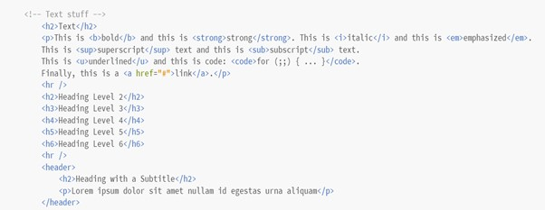
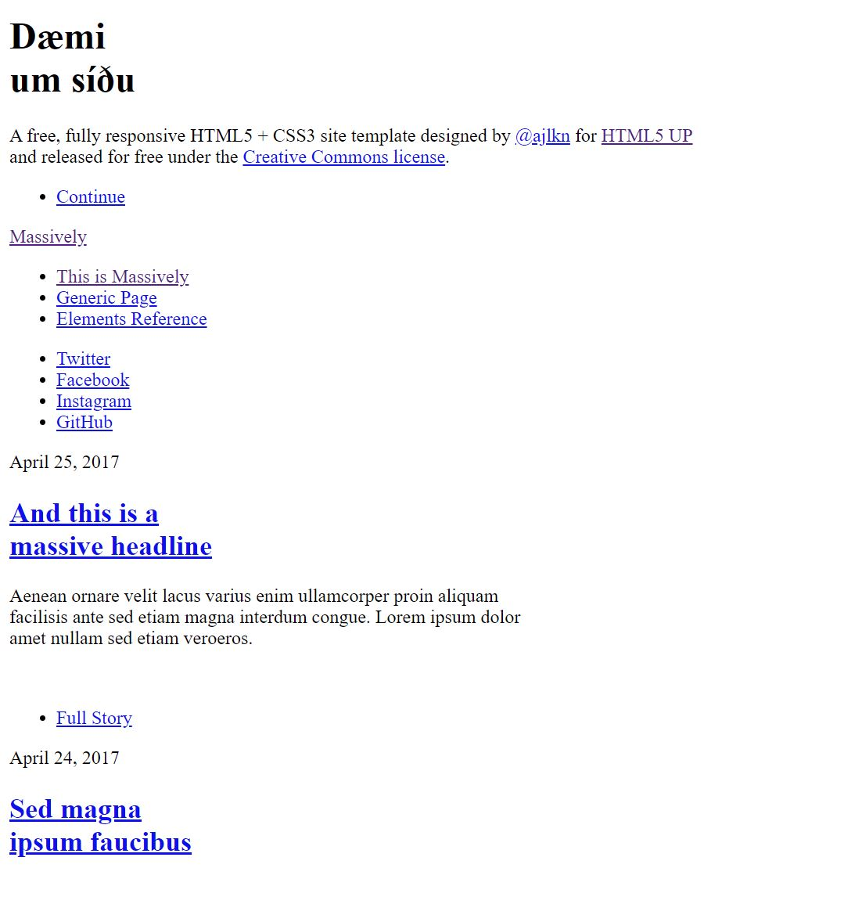
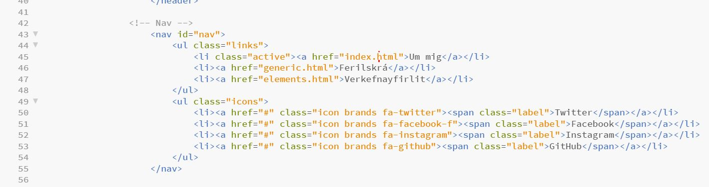
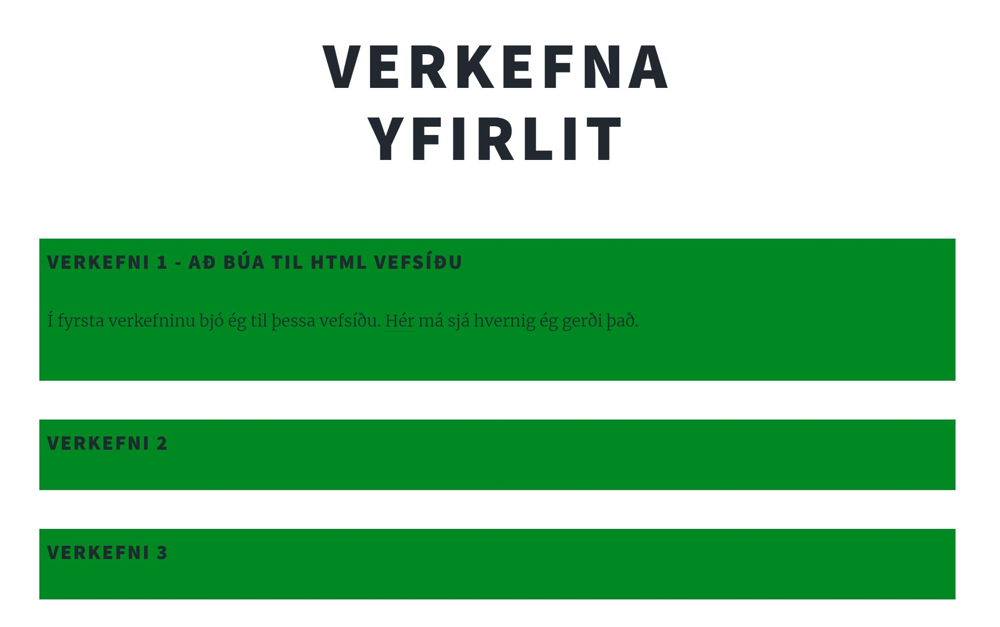
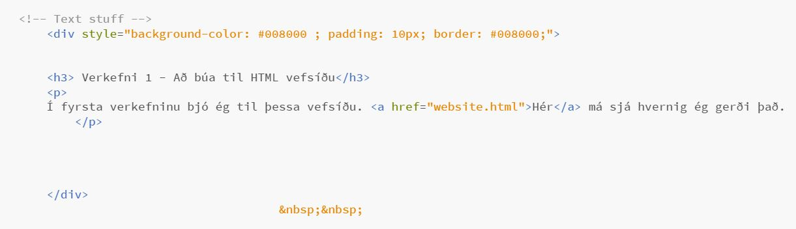

Um gerð vefsíðunnar
Undirbúningur og nauðsynleg tól
Þar sem ég hafði enga grunnþekkingu á HTML áður en ég byrjaði í þessum áfanga þá þurfti ég að styðjast við ýmis fræðslumyndbönd og fleira hjálplegt efni sem ég fann á netinu. Ég byrjaði á því að horfa á fjögur myndbönd frá Hafliða, kennara áfangans, á YouTube. Þau eru eftirfarandi:
Svo notaði ég þessa vefsíðu til þess að kynnast grunn segðum í HTML: w3schools.com
Þar sem ég hef litla sem enga reynslu í HTML forritun þá ákvað ég að fara eftir ábendingu kennarans með því að nota tilbúið sniðmát til þess að spara mér óþarfa vinnu við gerð þess. Mér fannst betri hugmynd að nota tilbúið sniðmát sem grunn og aðlaga það svo að mínum þörfum. Ég notaði sniðmátið Massively frá html5up síðunni, sjá hér: This is Massively
Á „elements“ síðunni á Massively template-inu (sjá fyrir neðan) fann ég margar hjálplegar segðir sem sýna alls konar hluti. Til dæmis hvernig á að skrifa feitletrað, hvernig fyrirsagnir og stærðir þeirra eru skilgreindar, veldisvísar og fleira. Þessar segðir notaði ég ítrekað við vefsíðugerðina. Ég hlóð einnig niður Brackets, sem er forritunar "editor" skrifaður í JavaScript, HTML og CSS og er hann aðallega notaður í vefsíðugerð. Svo hlóð ég niður Git til þess að geta hlaðið upp vefsíðunni þaðan yfir á github.com
Gerð vefsíðunnar - ferlið
Fyrst lenti ég í vandræðum með Live Preview hnappinn í Brackets. Eins og sjá má á myndinni fyrir neðan var hún mjög hrá og frumstæð á meðan ég var í vandræðum með Live Preview. Eftir margar tilraunir til að laga þetta vandamál komst ég að því fyrir tilviljun að ef ég opnaði skjölin frá Massively með „Open folder“ en ekki „Open“ þá fóru hlutirnir að virka betur.
Næsta skref var að aðlaga síðuna að mínum þörfum. Mig langaði að hafa hana einfalda og skipulagða og því fór ég að hreinsa aðeins til og merkja flipana efst á síðunni viðeigandi nöfnum. Í línum 45-47 má sjá að ég skýrði flipana efst á síðunni "Um mig", "Ferilskrá" og "Verkefnayfirlit". Á þessari mynd fyrir neðan má sjá brot úr kóðanum úr index skjalinu (fremstu síðunni) þar sem ég breytti nöfnum flipanna. Ég komst svo að því að það þarf líka að gera sömu breytingar í generic og elements skránum, svo ég gerði það líka.
Mér finnst best að hafa hlutina einfalda og skilvirka, þannig að ég ákvað að búa til flipa sem heitir "Verkefnayfirlit" og lítur síðan sem er á bakvið hann svona út (sjá mynd). Ég er búinn að búa til textareiti fyrir hvert og eitt verkefni og ég mun setja hlekk á verkefnin sem eru kláruð sem heitir "Hér" og þannig getur fólk skoðað verkefnin mín.
Textaboxin sem sjást á myndinni hér fyrir ofan gerði ég með þessum kóða:
Ég lærði þessa skipun á eftirfarandi síðu: thesitewizard.com
Svo notaði ég myndbandið frá Hafliða til að hlaða síðunni upp á Github.- © Untitled
- Design: HTML5 UP